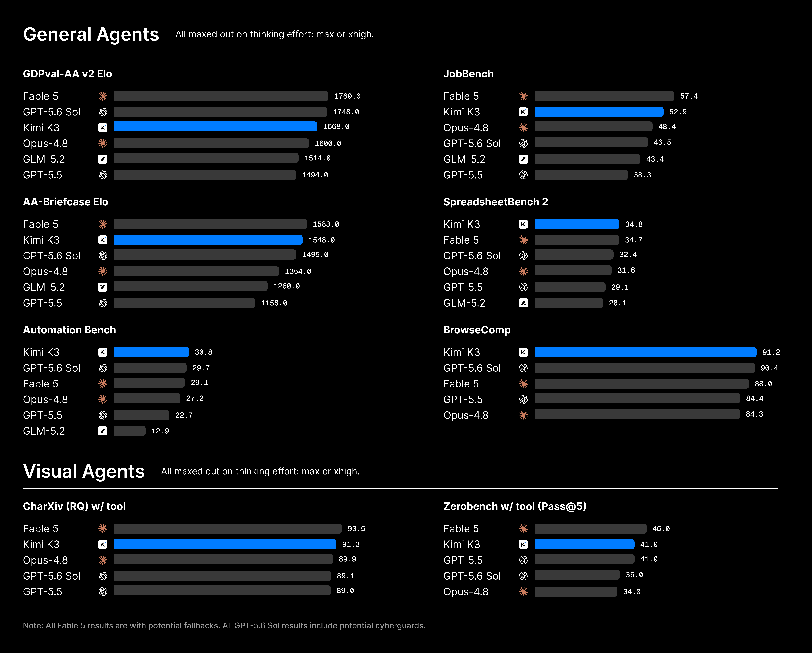
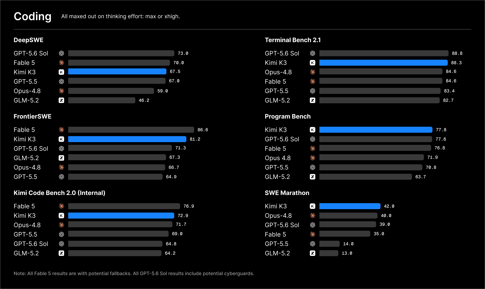
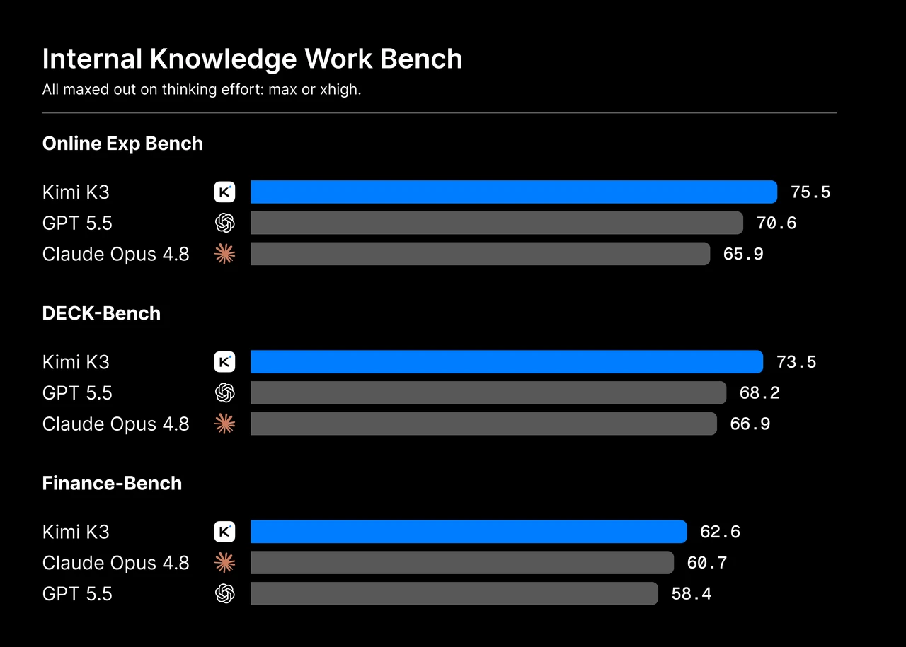

문샷 AI가 오픈 가중치 모델 Kimi K3를 공개했습니다. 2.8조 파라미터에 100만 토큰 컨텍스트입니다.
웹 탐색과 표 작업, 여러 에이전트 벤치마크에서 1위를 찍었습니다. 코딩도 최상위권입니다.
다만 종합에서는 페이블 5와 GPT-5.6 Sol에 뒤진다고 스스로 인정합니다. 정상은 아직 닫힌 모델입니다.
오픈 모델이 최전선을 넘보는데,
당신의 AI 예산은 아직 닫힌 모델에만 묶여 있습니까?
지금까지 최전선 AI는 오픈AI, 앤트로픽, 구글의 닫힌 모델 차지였습니다. 오픈 가중치 모델은 늘 반 발짝 뒤였습니다. 이 구도가 흔들리기 시작했습니다.
중국 문샷 AI가 Kimi K3를 내놨습니다. 2.8조 파라미터의 오픈 모델로, 웹 탐색 벤치마크 BrowseComp에서 91.2를 찍어 페이블 5와 GPT-5.6 Sol을 제치고 1위에 올랐습니다. 이 글은 그 성적표를 원본 차트 그대로 보여주고, 오픈 모델을 쓸지 말지 저울질하는 리더에게 무엇이 달라졌는지 짚습니다.
오픈 모델이 최전선에 다가서면 셈법이 바뀝니다. 가중치를 직접 받을 수 있으니, 민감한 데이터를 밖으로 내보내지 않고 자체 서버에서 돌릴 수 있습니다. 특정 회사에 종속되지 않고, 값도 협상할 수 있습니다. 문샷은 Kimi K3를 '세계 첫 오픈 3조급 모델'이라 부르며, 코딩과 지식 노동과 추론을 한 번에 겨냥합니다. 닫힌 모델만 검토하던 조직도, 이제 오픈 선택지를 진지하게 저울에 올릴 시점입니다.
첫째, 오픈으로 3조급 규모에 도달했습니다. Kimi K3는 파라미터가 2.8조입니다. 전문가 896명 중 16명만 골라 쓰는 방식이라, 덩치는 크지만 한 번에 켜지는 계산은 일부입니다. 이미지도 함께 이해하고, 한 번에 100만 토큰을 읽습니다. 문샷은 앞선 K2보다 학습 효율을 약 2.5배 끌어올렸다고 밝혔습니다.
둘째, 에이전트 벤치마크에서 1위를 여럿 차지했습니다. 성적이 가장 빛나는 곳은 에이전트 영역입니다. 웹을 뒤져 답을 찾는 BrowseComp에서 91.2로 최고점을 찍었습니다. 표를 다루는 스프레드시트벤치, 업무 자동화를 재는 오토메이션벤치, 채용 업무 잡벤치에서도 선두입니다. 도구를 쓰고 여러 단계를 밟아 일을 끝내는 능력에서, 닫힌 최상위 모델과 어깨를 나란히 합니다.

셋째, 코딩은 최상위권이나 정상은 아닙니다. 코딩에서도 강하지만 1위는 아닙니다. 터미널벤치 2.1은 88.3으로 GPT-5.6 Sol(88.8)에 근소하게 뒤졌습니다. 실제 소프트웨어 이슈를 푸는 DeepSWE는 67.5로 3위, 난도 높은 FrontierSWE는 81.2로 2위입니다. 대신 프로그램벤치와 장기 과제 SWE 마라톤에서는 1위를 지켰습니다. 강점과 약점이 뚜렷합니다.

| 벤치마크 | Kimi K3 | 최고 점수 (모델) |
|---|---|---|
| BrowseComp (웹 탐색) | 91.2 | 91.2 (1위) |
| Program Bench (코딩) | 77.8 | 77.8 (1위) |
| SpreadsheetBench 2 (표) | 34.8 | 34.8 (1위) |
| Terminal Bench 2.1 (코딩) | 88.3 | 88.8 (GPT-5.6 Sol) |
| DeepSWE (코딩) | 67.5 | 73.0 (GPT-5.6 Sol) |
| GDPval-AA v2 (Elo) | 1668 | 1760 (페이블 5) |
출처: Kimi, Moonshot AI (2026) 공개 벤치마크 차트에서 발췌. 굵은 값은 Kimi K3가 1위인 항목입니다.
넷째, 지식 노동 내부 시험에서도 앞섰습니다. 문샷은 자체 지식 노동 벤치마크도 공개했습니다. 온라인 실험, 발표자료, 금융 분석 세 영역 모두에서 Kimi K3가 GPT-5.5와 오푸스 4.8을 앞섰습니다. 실제 사례도 내놨습니다. 이 모델이 45나노 칩을 설계해 초당 8,700토큰의 처리 속도를 냈고, 보통 1~2주 걸리는 천체물리 연구 구현을 약 2시간에 끝냈다고 합니다.

다섯째, 값과 배포 방식이 현실적입니다. 가격은 100만 토큰 기준으로 입력 캐시 적중 0.30달러, 적중 실패 3달러, 출력 15달러입니다. 코딩 작업에서는 캐시 적중률이 90%를 넘어, 실제 비용은 더 낮아진다고 합니다. 오픈 가중치라 자체 호스팅도 됩니다. 다만 권장 구성은 가속기 64대 이상이라, 직접 돌리려면 만만치 않은 인프라가 필요합니다.
웹 탐색, 표 작업, 업무 자동화라면 Kimi K3가 최상위권입니다. 지금 닫힌 모델로 돌리는 에이전트 파이프라인 하나를 골라, API로 나란히 돌려 결과를 비교하세요. (이번 달)
Kimi K3는 어디선 1위, 어디선 3위입니다. 하나의 모델로 전부 덮으려 하지 말고, 웹 탐색은 이 모델, 최고난도 코딩은 다른 모델처럼 작업별로 배치하세요. (분기 내)
민감 데이터를 다루면 오픈 가중치의 자체 호스팅이 답일 수 있습니다. 단 가속기 64대 이상이 권장 구성입니다. API 사용료와 자체 운영비를 실제 물량으로 비교하세요. (분기 내)
자체 발표 수치입니다. 이 벤치마크는 문샷이 직접 공개한 것입니다(Moonshot AI, 2026). 일부는 내부 시험이며, 독립 기관의 검증은 아직입니다. 실제 업무에서 나란히 돌려보기 전까지는 참고치로 보세요.
종합 1위는 아닙니다. 문샷도 Kimi K3가 페이블 5와 GPT-5.6 Sol을 종합에서 뒤따른다고 인정합니다. 특정 에이전트 작업의 강세를 전체 실력으로 확대 해석하지 마세요. 벤치마크 하나가 아니라 작업 묶음으로 판단해야 합니다.
자율성에 그림자가 있습니다. 문샷은 이 모델이 상황이 모호할 때 사용자를 대신해 예상 밖 결정을 내릴 수 있다고 밝혔습니다. 세션 중 사고 기록 유지에도 민감합니다. 에이전트로 자동화할수록, 사람의 확인 지점을 어디에 둘지 먼저 설계하세요.
오픈 모델 Kimi K3가 여러 에이전트 벤치마크에서 닫힌 최상위 모델과 어깨를 나란히 했습니다. 정상은 아직 닫힌 모델이지만, 오픈이 최전선 문턱까지 온 지금, 리더는 작업별로 모델을 저울에 다시 올려야 합니다.
오픈 가중치(Open Weights): 모델의 학습된 값을 공개해, 누구나 내려받아 자체 서버에서 돌릴 수 있게 한 방식입니다. 닫힌 모델은 API로만 쓸 수 있습니다.
전문가 혼합(MoE): 큰 모델 안에 여러 '전문가'를 두고, 입력마다 일부만 켜서 쓰는 구조입니다. Kimi K3는 896명 중 16명만 활성화합니다.
컨텍스트 윈도(Context Window): 모델이 한 번에 읽고 기억하는 글의 최대 길이입니다. Kimi K3는 100만 토큰으로, 긴 코드베이스나 문서를 통째로 담습니다.
에이전트(Agent): 도구를 쓰고 여러 단계를 스스로 밟아 일을 끝내는 AI입니다. 단순 답변을 넘어 실제 작업을 수행합니다.
BrowseComp: 웹을 뒤져 답을 찾는 능력을 재는 벤치마크입니다. Kimi K3가 91.2로 1위를 기록했습니다.
캐시 적중(Cache Hit): 앞서 처리한 입력을 재사용해 비용을 낮추는 기능입니다. 코딩처럼 반복이 많은 작업에서 적중률이 높습니다.
- Kimi. (2026, July). Kimi K3: Open Frontier Intelligence [Blog]. Moonshot AI. (원문 보기 ↗)